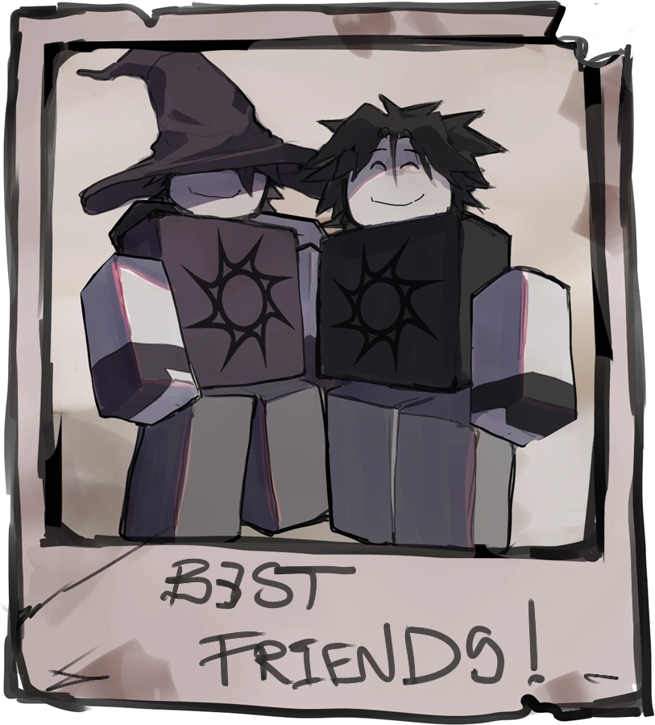

About Two Time
Two Time is a Forsaken character devoted follower of the Family Home For The Reborn, which believes sacrificing others grants a second life from their God, The Spawn.

Two Time and Azure
Two Time’s characteristics
- Devoted
- Mentally Unstable
- Loyal
- Socially Awkward